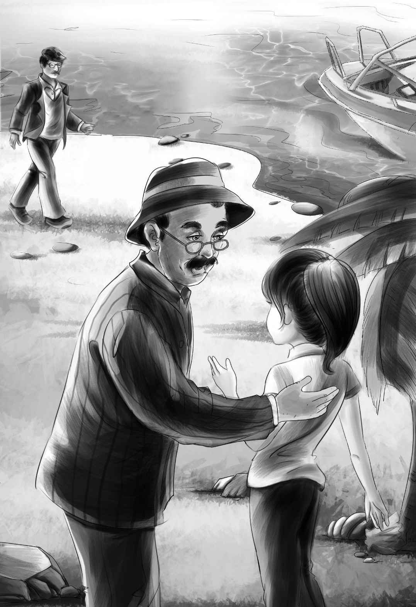

“Somebody had better call Grandfather right away，”said Henry．
“Let me，”said Benny．“It’s my birthday．”
Later，when Benny came back from Captain Daniel’s hut，he said，“Grandfather is coming today，and he’s bringing Dr．Moore and his mother．”
“That’s great，”said Henry．“We’ll have a big party．”
Then Benny said to Joe，“Are you going to tell Grandfather that he’s your grandfather，too？”
“He isn’t my grandfather，Benny．He’s my uncle．”
“All right，are you going to tell him that he’s your uncle？”asked Benny．
“He will know me as soon as he sees me，”replied Joe．
Mr．Browning said，“I don’t think he had better see you suddenly，John．He must be very sad because he thinks he has lost you．Sudden news like this is not good for an old man．”
“Let Jessie fix it，”said Joe．“I will stay in the hut until you tell me it’s all right．”
Jessie promised to do her best．
Joe went back to Captain Daniel’s hut to wait．In a few minutes they could see the motorboat coming，and soon Mr．Alden and the Moores were on the dock．
“Hello，Grandfather！”cried Benny．“It’s my birthday！”
“Well，so it is！”replied Mr．Alden．“Happy birthday，my boy！”
Then everyone began to speak at once．
“That’s a big basket you have，”said Jessie to Dr．Moore．
“Sh，sh！”said the doctor，laughing．He took out another big basket just like it and some packages．“Presents，”he whispered to Jessie．
“I got a big bottle of cream for my birthday，Grandfather，”said Benny．
“It was funny，Grandfather，”said Jessie，half laughing．“That’s all he wanted，so we got it．”
“You did right，my dear，”said Mr．Alden．“People should have what they want on birthdays．”
“I got lots of surprises today，”Benny went on．
“He doesn’t know them all himself，yet，”said Jessie quickly．She didn’t know what Benny might say next．
“This island is just full of surprises，and that would be a good name for it——Surprise Island．”
“It would！”cried Henry．“Just think of all the surprises we’ve had．Let’s call it Surprise Island．”
“I think that’s a wonderful name，”said Mrs．Moore．“I hope they were all good surprises．”
“Every one，”said Henry，trying to get Benny to think of something else．“There were clams，and the Indian things，and the violin．”
“And my birthday，”said Benny．“Are your veins all right，Grandfather？”
“Veins？”asked Mr．Alden．
“Yes，”said Benny．“You know some people have funny veins，so when they hear something awfully good，suddenly，they just drop down dead．”
“I am sure that good news wouldn’t kill me，”said Mr．Alden．“Now，Mrs．Moore，just look at that white sand！ Isn’t it beautiful？”
“It certainly is，”said Mrs．Moore．
“It’s very good sand for houses，too，”said Benny，running down to it．
“Let’s build a house，then，”said Dr．Moore，putting down the baskets．
Jessie was trying to think of exactly the right way to tell her grandfather about Joe．She had not wanted to tell the news too suddenly，but Benny seemed to have made it easy．
“I suppose Benny is right about the veins，isn’t he，Grandfather？”she said．
“I suppose so，”said Mr．Alden，laughing．He sat down on a rock．“But I never could understand it．If I had good news，I wouldn’t want to miss the fun．”
“That sounds right to me，”said Henry，laughing．
Jessie could not wait any longer．“We have a wonderful surprise for you，Grandfather！”she said，getting up．“Come！ You know what you promised about the veins？”
“You can’t drop dead，because you promised！”shouted Benny．
“What do you mean？”asked Mr．Alden，looking very white．He started to go with the excited children．

“Think of the nicest surprise you can，”said Henry．“What would that thing be？”
“It wouldn’t be a thing; it would be a man，”said Mr．Alden．
“That’s all right！”cried Jessie．“It is a man！”
Violet took her grandfather’s hand．“Are you too worn out to run just a little way，now？ Joe is so worried．”
“Joe？”said Mr．Alden．But then he saw two men coming along．
“My dear John！”cried Mr．Alden．Joe ran up and took his uncle’s hands．
“Uncle James，I want you to meet my good friend，Mr．Browning，”said Joe．
“I am glad to meet you，Mr．Browning，”said Mr．Alden as they shook hands．
Then he turned to Joe．“But why didn’t you come home，John？ Why didn’t you come right to me？”
“Before I came home，I wanted to be sure I was all right，”said Joe．“But first I went to old Captain Daniel on the island．I met Dr．Moore early this summer when he came with the children．”
“Dr．Moore，do you mean you knew who he was all this time？”asked Mr．Alden．
“Yes，”replied the doctor，“but I promised not to tell．I wanted to be sure myself that Joe was well again．Besides，it was a good way for him to get to know his new cousins．”
“I got two presents for my birthday，”said Benny，“a new cousin and a bottle of cream．”
“I feel as if it were my birthday，”said Joe，looking at him．
“And so do I，”agreed Mr．Alden．
“I think it’s my birthday，too，”said Mr．Browning，looking at his old friend．
“It’s everybody’s birthday，”cried Jessie．“Can’t you all come to the barn for our birthday supper？ We can cut the cake into tiny slices．”
“I thought of that，also，Jessie，”said Mrs．Moore，going over to the little housekeeper．“I brought over some sliced ham and other food in those two big baskets．I hope you don’t mind？ I hear you have blackberries and cream．”
“And my birthday cake，”said Benny．
“Oh，dear！ I haven’t put on the candles，yet！ I haven’t even frosted it！”cried Violet．
“Benny，you stay here with the men，”said Jessie．“Mrs．Moore will help Henry and me while Violet frosts the cake．”
Violet put some sugar and egg whites into a bowl．After the frosting was made，she put it on the cake，sides and all．
“Let’s put the candles around the edge of the cake and ’Watch’ in the middle，”she said．One day Henry had bought a little toy dog that looked like Watch．The cake looked delicious when Violet put it into the little cupboard．
Mrs．Moore began to take things out of the baskets．Besides a large plate piled high with ham there were many other delicious things to eat．
Jessie was delighted that Mrs．Moore had brought some extra plates and a tablecloth．She helped Mrs．Moore put the white cloth carefully on the table．Violet set the birthday cake at Benny’s place．Then she filled a bowl with purple and white flowers to put in the middle of the table．
When Benny saw the cake and the toy dog he laughed and said，“Ho，that looks just like Watch in the middle of my cake！”
Now everybody began to sit down around the table．Some sat on boxes，Grandfather sat on the company chair，and Joe sat on a block of wood．
Mrs．Moore passed the plate of ham to Benny．
“No，thank you，”said Benny．“I don’t want any ham．I just want blackberries and sugar and cream．”
“Since it’s his birthday party，let him have what he wants，”said Jessie．
“I’ll feel bad if you don’t eat some cake，”said Violet．
“All right，”said Benny，“but after I eat my cake，I don’t want anything except blackberries and cream，like Peter Rabbit．”
“Only Peter Rabbit didn’t get any．Don’t you remember？”said Grandfather．
“He will this time，”said Joe．“At last Peter Rabbit has his blackberries and cream，on his birthday．”
“Everybody is happy，then，”said Mr．Alden，looking around at the smiling faces．“And that is just right，because it is everybody’s birthday．“